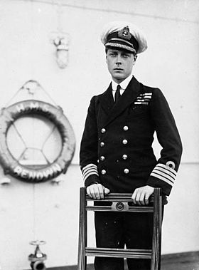

Содержание:
| Edward VIII | |
|---|---|
|  | |
| Король Великобритании и Ирландии |
|
| Коронация: | не короновался |
| Предшественник: | Георг V |
| Преемник: | Георг VI |
| Отречение: | 11 декабря 1936 |
| Император Индии |
|
| Коронация: | не короновался |
| Предшественник: | Георг V |
| Преемник: | Георг VI |
| Отречение: | 11 декабря 1936 |
| Вероисповедание: | Протестантизм |
| Рождение: | 23 июня 1894 |
| Смерть: | 28 мая 1972 (77 лет) Нёйи-сюр-Сен, под Парижем |
| Место погребения: | Королевское кладбище, Фрогмор, Беркшир |
| Род: | Виндзорская династия |
| Отец: | Георг V |
| Мать: | Мария Текская |
| Супруга: | Уоллис Симпсон (после отречения) |
| Образование: |
Магдален-колледж и Британский Королевский |
| Автограф: | |
| Монограмма: |  |
Биография
Ранние годы. Принц Уэльский
Родился в Уайт-Лодж, Суррей; старший правнук королевы Виктории по прямой мужской линии, имел с рождения титул высочества. При крещении получил шесть имён — Эдуард в честь деда, Альберт в честь прадеда, а имена Джордж (Георгий), Эндрю (Андрей), Патрик и Дэвид (Давид) — соответственно в честь святых покровителей Англии, Шотландии, Ирландии и Уэльса. Из имён предпочитал последнее, Давид или Дэвид, и до конца его дней ближайшие родственники и друзья так его и называли.
После смерти деда, Эдуарда VII, 6 мая 1910, 15-летний принц автоматически стал наследником британского престола, а 2 июня 1910 года отец, Георг V, дал ему титул принца Уэльского. Он был первым со времён Средневековья принцем Уэльским, прошедшим инвеституру (1911) в Кэрнарвонском замке в Уэльсе, на чём настоял премьер-министр, валлиец Дэвид Ллойд-Джордж. Во время Первой мировой войны служил в армии, ездил на фронт, но его не пускали воевать на передовую. Российский император Николай II 16 мая 1916 года наградил его орденом св. Георгия 3-й степени. В 1920-е много ездил по Британской империи, посещал области, поражённые Великой депрессией и проч.
Первой мировой войны, ок. 1915.
Царствование
20 января 1936 года Георг V скончался; 42-летний принц Уэльский был провозглашён королём Эдуардом VIII Великобританским и Ирландским, и всех государств Содружества и проч., и императором Индии. На другой день он вызывающе нарушил протокол, наблюдая за провозглашением манифеста о своём вступлении на престол в компании (формально замужней) миссис Симпсон. Ранее в тот же день монарх прибыл из Сандринхема, где умер его отец, в Лондон на самолёте, став первым британским королём, поднявшимся на борт воздушного судна. Немедленно же по вступлении Эдуарда на престол в лондонском суде начался бракоразводный процесс г-жи Симпсон, и стало очевидным, что король хочет жениться на ней. Но, следуя духу британских законов, сделать это было невозможно: король является главою англиканской церкви, которому запрещён брак с лицом, ранее состоявшим в расторгнутом браке. Ряд консервативных политиков, во главе с премьером Стэнли Болдуином, прямо заявили королю о том, что госпожа Симпсон не может быть ни королевой Великобритании, ни морганатической супругой. То же подтвердили и главы всех доминионов Содружества, кроме Ирландии. В сентябре 1936 года была выпущена серия почтовых марок с изображением Эдуарда VIII.
Воинские звания
Отречение
16 ноября 1936 года Болдуин заявил, что перед королём есть три альтернативы: 1) отказаться от идеи брака; 2) жениться на Уоллис против воли министров, что приведёт к отставке правительства, досрочным выборам и конституционному кризису в Британии и во всех доминионах, кроме ирландского, причём основным поводом слушаний в новом парламенте станет личная жизнь короля; 3) отречься от престола. Уже на продолжении своего краткого царствования он выступал против вмешательства во внутренние дела Германии, поддерживал Муссолини в агрессии против Эфиопии и проч.[1] и вступал в конфликт с правительством по политическим вопросам. В правительственных кругах существовало мнение о том, что Уоллис — агент Германии[2]. Однако нет никаких доказательств того, что его отречение носило политический характер. Не желая приводить государство к кризису и возможному распаду и твёрдо уверившись в желании жениться на любимой женщине, Эдуард выбрал последний вариант. Был подготовлен закон о порядке отречения, указ о введении которого в действие Эдуард подписал 10 декабря 1936 года в своём замке, форте Бельведер, в присутствии трёх братьев: герцога Альберта Георга Йоркского, герцога Генри Глостерского и герцога Георга Кентского. На следующий день он дал формальное согласие (Royal assent) на обнародование акта во всех доминионах Содружества, кроме Ирландии, которая не пожелала по такому случаю созвать парламент и лишь 12 декабря подтвердила это решение; таким образом, на протяжении 24 часов у Великобритании и Ирландии были разные короли. В ночь на 11 декабря бывший король выступил по радио с речью: «Я нашёл невозможным нести тяжёлое бремя ответственности и исполнять обязанности короля без помощи и поддержки женщины, которую я люблю».Непосредственно затем, 11 декабря 1936 года, следующий в порядке наследования герцог Альберт Георг Йоркский автоматически стал королём Великобритании как Георг VI, а дочь его, принцесса Елизавета, ныне царствующая королева, стала наследницей престола. Георг VI короновался в мае 1937 года, в тот самый день, когда собирался короноваться его брат. Миф о том, что Эдуард отрёкся от трона ради своей любви и желания жениться на Уоллис Симпсон, популярен и по сей день. Считается, что именно это послужило основной причиной для конфронтации с правительством. Безусловно, стремление короля жениться на дважды замужней женщине могло быть нежелательно, но не настолько, чтобы привести к отречению. В данном случае, любовь короля была наименьшим злом. На самом деле Эдуарду чьё-либо разрешение на брак было по сути не нужным — он был сувереном и вправе жениться на том, на ком считал необходимым. Единственным требованием было выбрать себе женщину, не принадлежащую к Римско-католической церкви, — она должна была быть протестанткой, так как король Британии является главой Англиканской церкви. Акт о Престолонаследии 1701 года дает право суверену одобрять выбор любого из членов королевской семьи на брак, но самого монарха никто не вправе контролировать[3]. Король Георг V, когда пришло время жениться младшему брату Эдуарда Альберту, лично выбрал ему невесту — Елизавету Боуз-Лайон. Король пытался подобрать партию и для Эдуарда, однако тот был менее сговорчив и более свободолюбив, чем покорный Альберт. После смерти Георга V Эдуард автоматически стал следующим королём Британии и, следовательно, мог выбрать себе в жены любую некатоличку. По неписаной конституции, монарх имеет право, по большому счёту, делать всё, что ему заблагорассудится, при условии, что это никогда не станет достоянием общественности. Эдуард же как будто нарочно посвящал Стэнли Болдуина и правительство во все тонкости беспокоящих его вопросов. Даже такое близкое и доверенное лицо Эдуарда, как Уинстон Черчилль, никак не мог понять смысла отречения. Он считал, что: «Между сувереном и парламентом не было конфликта. С парламентом вопрос личной жизни Эдуарда не обсуждался, и выказывать своё отношение к поведению монарха он не имел права. Это совершенно не та причина, которая породила противостояние между парламентом и королём. Вопрос брака с Уоллис мог бы быть решён в обычном ходе обсуждения в парламенте. Ни одно министерство не имеет права требовать, или даже советовать суверену отречься. Даже на самом серьёзном парламентском процессе, вопрос мог быть решён в пользу Эдуарда. Кабинет не имеет права что‐либо решать без предварительного согласия и позволения парламента. Если бы Эдуарда и впрямь заставили отречься, то это было бы очень грубым правовым нарушением и отбросило бы чёрную тень на многие века существования Британской империи»[4]. Современные историки, а также советники Эдуарда утверждают, что, если бы Эдуард официально объявил о намерении жениться на Уоллис, кризиса 1936 года не возникло бы. Эдуард вполне мог стать полноправным королём и, будучи неженатым человеком, в мае 1937 года был бы коронован, он бы был признан британским и колониальным обществом, после чего бы был провозглашён королём и Императором. Ещё будучи принцем Уэльским, Эдуард пользовался колоссальной популярностью у людей не только своей страны, но и по всему миру — ему везде были рады. Поэтому сомнений, что его кто-то бы не принял, нет. Даже несмотря на порицание его семьи, друзей и членов правительства, Эдуард был бы коронован, вне зависимости от чего бы то ни было. Затем, следовало бы переждать некоторое время, после чего уже можно было говорить о свадьбе с Уоллис Симпсон[5]. Может быть, это и вызвало бы небольшой резонанс, но в таком случае, та группа людей, которая была бы против свадьбы, в любом случае, ничего бы не смогла сделать.
Герцог Виндзорский
После выступления по радио 11 декабря 1936 года Эдуард уехал в Австрию. По закону, он не имел права видеться с Уоллис до момента окончания бракоразводного процесса. 3 мая 1937 года Уоллис позвонила Эдуарду, и радостно прокричала в трубку, что все, наконец, закончилось – она разведена. Эдуард уже был в курсе, так как несколькими часами ранее ему уже позвонили с этими новостями из Лондона. Не теряя времени, он сразу же начал собираться, чтобы прямиком отправиться в поместье Шарля Бидо во Францию, где его ждала Уоллис.
герцогиня Виндзорская (Уоллис Симпсон)
и фюрер Адольф Гитлер. 1937
За два года до смерти Эдуарда
Киновоплощения
Награды
Британские:
Иностранных государств:
 Кавалер Большого креста ордена Почётного легиона, 1912
Кавалер Большого креста ордена Почётного легиона, 1912 Рыцарь ордена Слона, 1914
Рыцарь ордена Слона, 1914 Рыцарь Большого креста ордена святого Олафа, 1914
Рыцарь Большого креста ордена святого Олафа, 1914 Рыцарь высшего ордена Святого Благовещания, 1915
Рыцарь высшего ордена Святого Благовещания, 1915 Военный крест, 1915
Военный крест, 1915 Орден Святого Георгия 3 степени, 1916
Орден Святого Георгия 3 степени, 1916 Орден Михая Храброго, 1918
Орден Михая Храброго, 1918 Цепь ордена Кароля I, 1924
Цепь ордена Кароля I, 1924 Большой крест ордена Заслуг, 1925
Большой крест ордена Заслуг, 1925 Большой крест ордена Андского орла, 1931
Большой крест ордена Андского орла, 1931